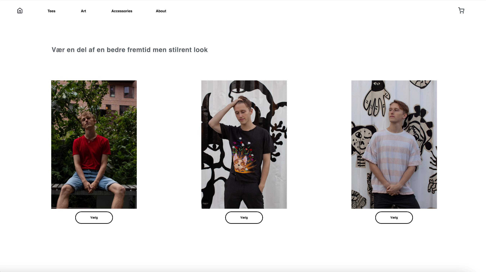
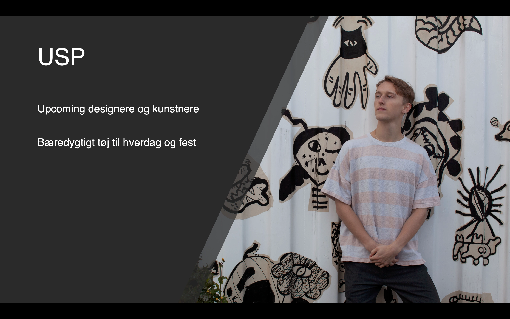

Tema 03 - Grundlæggende UX
03.02.06 Prototype 2
Til vores prototype skulle vi selv komme med en ide og et koncept til vores løsning. Vi blev introduceret til design sprints hvor vi lærte de forskellige faser man har når man laver et sprint. I min proces med at udvikle koncept havde jeg stor glæde af surveys og mit interview research som gav et billede af folks bruger/kunde oplevelse af e-handel. Ud fra det lavede jeg min USP og producerede de billeder jeg skulle bruge til webshoppen. Vi testede vores første version af prototypen, ved at lave en tænke højt test, som gav meget at arbejde videre med i forhold til hvordan andre oplevede prototypen. Til den anden version havde jeg gennemgået alt den feedback og test resultater og forbedret de ting jeg synes der skulle være i version 2.
03.03.03 Pitch
Vi skulle pitche vores koncept og vise vores prototype i grupper, for at lære at sætte ord på det man har lavet. Det var en god øvelse i at kunne vise og forklare hvordan og hvorfor man havde taget de valg man havde og prøve at få andre til at forstå det koncept man har arbejdet på. Ud fra den feedback jeg fik fra pitchen, gjorde jeg mig nogle overvejelser over hvad jeg kunne havde gjort anderledes hvis jeg skulle arbejde videre på prototypen.
